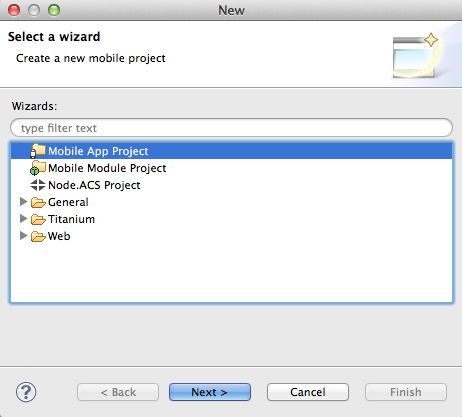
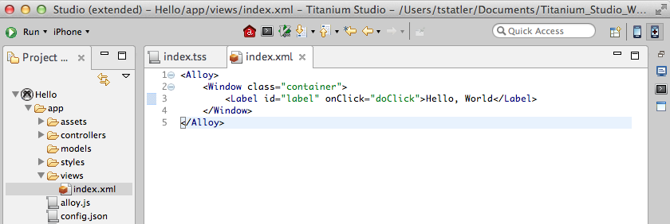
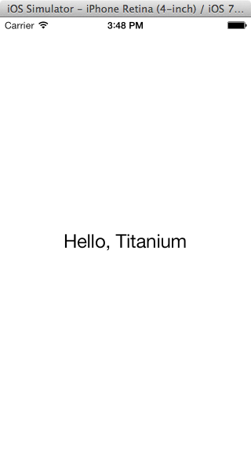
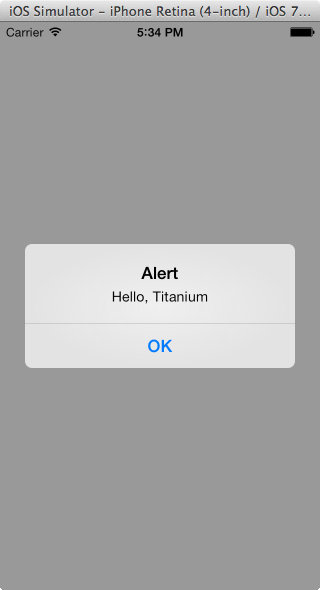

Titanium SDK Quick Start
Overview
This guide walks through the steps of installing and configuring Studio and third-party SDKs and tools required to develop native mobile applications with Studio. If you prefer to use your own editor or IDE, you can integrate the Titanium command-line tools into your environment (see Setting up the Titanium CLI for instructions).
System requirements
Your system environment must meet the following requirements to run Studio:
-
Operating System: A recent version of Windows, OS X or Ubuntu
-
Memory: 8 GB RAM minimum system memory (2 GB RAM available memory). 16 GB RAM recommended.
-
Java Runtime: Oracle JDK (no other brand of Java is suitable)
-
Node.js: required for the Titanium command-line tools like the CLI, Alloy and API Runtime Services.
Download and install Studio
To download Studio you must have an Appcelerator Platform account. Sign up for an Appcelerator Platform account.
-
Log in to https://platform.appcelerator.com/.
-
Expand the Appcelerator menu
 and clicked on Studio.
and clicked on Studio. -
Download the installer or ZIP file for your operating system.
-
Launch the downloaded installer.
-
Download the installation file for the version of your operating system.
-
For Mac OS X and Windows systems, run the installer program.
-
For detailed install instructions, see Appcelerator Studio Getting Started.
First Launch
The first time you launch Studio you need to select a workspace, or folder where Titanium stores your project files and IDE preferences.

On the Studio launch screen, enter your Appcelerator Platform account credentials and click Login. Studio remembers your login credentials until you sign out of Studio.
Installing the platform SDKs
To develop native applications with Titanium you need the SDKs and tools for those native platforms installed on your system. For example, to develop Android applications you need the Android SDK and toolchain installed.
The first time you launch Studio the Platform Configuration dialog opens. This dialog indicates which platform SDKs are installed and which are not, and lets you easily install individual SDKs. In the following screenshot, the system has none of the native SDKs installed.
To install the platform SDKs:
-
Select the platforms you want to install.
-
Optionally click Settings next to each platform to customize the installation configuration. For more details, see Installing Platform SDKs.
-
Click Configure to start the installation process.
Studio begins downloading and installing each SDK you selected, according to the settings you specified. In the case of iOS, Studio launches the App Store application installed on your Mac to the XCode download page.

Checking for Studio and SDK updates
When Studio launches for the first time, it automatically downloads and installs the latest Titanium SDKs and additional command-line tools. Once complete, confirm that no further updates are pending and that Studio is at the latest version.
From the menu bar, select Help > Check for Appcelerator Updates to verify that all the official Titanium components are installed and repeat this step until there are no more updates available.
Hello Titanium app
Now that you've installed Studio and at least one of the native platform SDKs, you're ready to create and run an application on a device or simulator.
Create a project
The first step is to create a new Mobile App Project and select a starting template. The Titanium SDK supports two project types: Alloy and Classic. Alloy is an MVC framework that lets you develop applications in less time and with less code than is possible in a Classic project. In general, it's recommended you use Alloy for your projects.
To create a new project:
-
In Studio, either:
-
Press ⌘+N (Mac) or Ctrl+N (Window) to open the project wizard dialog.
-
or from the menu bar, select File > New > Mobile App Project.
-
-
Select Mobile App Project as the wizard type and click Next.
 -
On the Project Template page, select Default Alloy Project as the template type. Click Next.

-
On the Project Location page, enter the following information:
-
In the Project Name field, enter Hello.
-
In the App ID field, enter com.example.hello. This format is called reverse domain notation. You must use your own domain before publishing your application to market, but for testing purposes a temporary domain is fine.
-
Select one or more Deployment Targets. By default, Studio selects all available targets platforms that you have installed.

-
-
Click Finish to create the project. By default, the application's configuration file called tiapp.xml opens. You can close that file.
-
In the Project Explorer view, open index.xml located in the app/views folder.

When developing an app in Alloy, you create your UI declaratively using XML elements that, during compilations, are mapped to standard Titanium SDK objects. For instance, the default Alloy template includes a <Label> element that corresponds to a Label object.
-
In index.xml, change the text inside the <Label> element from Hello, World to Hello, Titanium.
-
Save your changes. Now we're ready to run the application.
Running the application
To run the application you select a target simulator, emulator, or device, and click Run. The targets available for you to test with depends on which native SDKs you previously installed. For this example, it's assumed you've installed XCode and are targeting an iOS simulator. If you are targeting Android, select an appropriate simulator, emulator or device from the Target menu.
-
Select the project in Project Explorer.
-
Make sure Run is selected in the Launch Mode drop-down.
-
From the Target drop-down, select an iOS simulator.

-
Click Run. Your application is compiled and launched in the iOS Simulator. Click the Hello, Titanium label text. An alert dialog appears.
 
If you run into problems running your application, see Studio Troubleshooting.
Troubleshooting
If you are experiencing problems after following these setup instructions, please follow the more detailed Setting up Studio guide.
Next steps
You can learn more about Titanium by opening the Studio Dashboard, then
-
Watching the Appcelerator University videos
-
Importing one of the other sample projects as explained in Titanium Samples
-
Follow Creating Your First Titanium App to build your first Alloy application